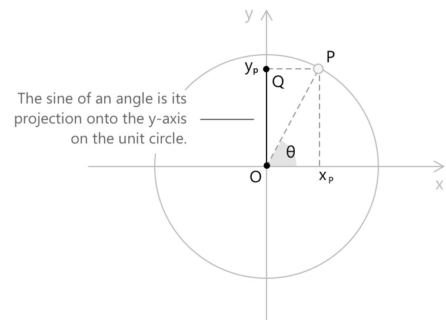
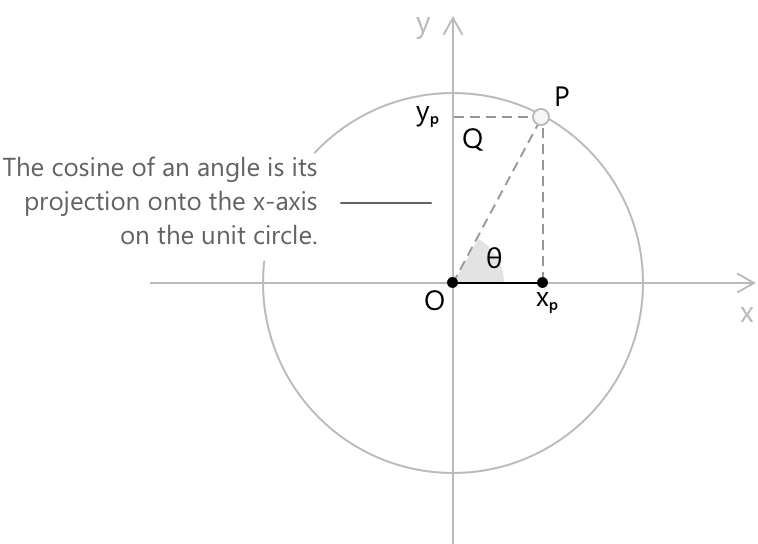
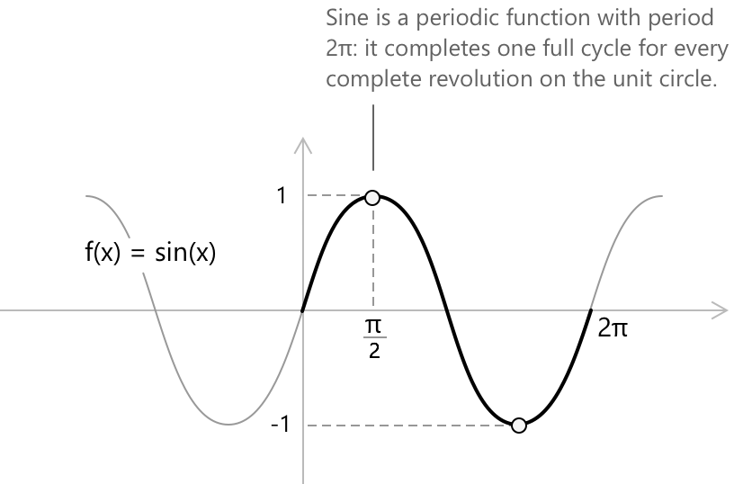
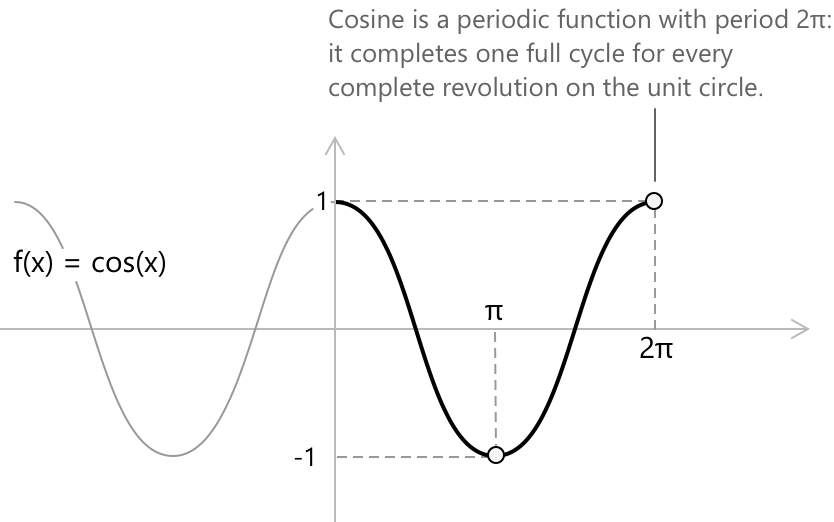

Синус та косинус
Вступ
Синус і косинус — це дві основні тригонометричні функції. Для заданого орієнтованого кута \( \theta \), що представлений на одиничному колі точкою \( P \), синус і косинус \( \theta \) визначаються відповідно як \( y \)-координата та \( x \)-координата точки \( P \). Одиничне коло — це коло радіуса \( 1 \) з центром у початку координат, що описується рівнянням:
\[ x^2+y^2=1 \]
Орієнтований кут є додатним, якщо він описується поворотом проти годинникової стрілки, і від'ємним, якщо поворотом за годинниковою стрілкою. Усі кути, що відрізняються на ціле кратне \( 2\pi \), визначають одну й ту саму точку на одиничному колі, і тому представляються як \( \theta+2k\pi \), де \( k \in \mathbb{Z} \).
Означення синуса та косинуса
Розглянемо орієнтований кут \( \theta \) та точку \( P \) на одиничному колі, пов'язану з \( \theta \). Синус \( \theta \) визначається як \( y \)-координата точки \( P \). Він збігається з відношенням катета \( \overline{OQ} \) до гіпотенузи \( \overline{OP} \) прямокутного трикутника, вписаного в одиничне коло, і оскільки \( \overline{OP} = 1 \), отримаємо:
\[ \sin(\theta) = \frac{\overline{OQ}}{\overline{OP}} = \frac{\overline{OQ}}{1} = y_P \]

Аналогічно, косинус \( \theta \) визначається як \( x \)-координата точки \( P \). Він збігається з відношенням катета \( \overline{OR} \) до гіпотенузи \( \overline{OP} \), так що:
\[ \cos(\theta) = \frac{\overline{OR}}{\overline{OP}} = \frac{\overline{OR}}{1} = x_P \]

Отже, синус і косинус кута є не чим іншим, як проекціями точки \( P \) на координатні осі: синус — на вісь \( y \), а косинус — на вісь \( x \).
Основна тригонометрична тотожність
Значення синуса та косинуса задовольняють властивість, відому як основна тригонометрична тотожність: \[ \sin^2\theta + \cos^2\theta = 1 \] Геометрично ця тотожність представляє теорему Піфагора, застосовану до трикутника \( OPR \), вписаного в одиничне коло, де \( PR \) та \( \overline{OR} \) відповідають катетам, а \( \overline{OP} \) є гіпотенузою одиничної довжини.
Тригонометричні тотожності
-
\[ \text{1. } \quad \sin(2x) = 2\,\sin(x)\cos(x) \]
-
\[ \text{2. } \quad \cos(2x) = \cos^{2}(x) - \sin^{2}(x) \]
-
\[ \text{3. } \quad \cos(2x) = 1 - 2\sin^{2}(x) \]
-
\[ \text{4. } \quad \cos(2x) = 2\cos^{2}(x) – 1 \]
-
\[ \text{5. } \quad \sin(x+y) = \sin(x)\cos(y) + \cos(x)\sin(y) \]
-
\[ \text{6. } \quad \cos(x+y) = \cos(x)\cos(y) – \sin(x)\sin(y) \]
Ці тотожності відображають найважливіші зв'язки між синусом і косинусом. Вони безпосередньо випливають з геометрії одиничного кола і становлять основу багатьох тригонометричних перетворень. Для ширшого огляду зверніться до повної збірки тригонометричних тотожностей.
Періодичність
Синус і косинус набувають значень від \(-1\) до \(1\), оскільки довжини відрізків \( \overline{OR} \) та \( \overline{PR} \) не можуть перевищати радіус, який дорівнює 1.
Якщо до кута \( \theta \) додати ціле кратне повного оберту, значення синуса та косинуса залишаться незмінними, оскільки точка \( P \) повернеться в те саме положення на одиничному колі. З цієї властивості випливає, що синус і косинус є періодичними функціями з періодом \( 2 \pi \): \[ \sin\theta = \sin(\theta + 2 \pi k) \quad k \in \mathbb{Z} \] \[ \cos\theta = \cos(\theta + 2 \pi k) \quad k \in \mathbb{Z} \] Це означає, що функції повторюють свої значення кожні \( 2 \pi \), що відображає циклічну природу кругового руху.
Тангенс і котангенс
Відношення синуса до косинуса кута \(\theta \) дорівнює тангенсу цього кута:
\[ \tan(\theta) = \frac{\sin(\theta)}{\cos(\theta)} \]
Відношення косинуса до синуса кута \(\theta \) дорівнює котангенсу цього кута:
\[ \cot(\theta) = \frac{\cos(\theta)}{\sin(\theta)} \]
Поширені значення
У наступних таблицях зібрано значення синуса для найчастіше зустрічаючих кутів, виражених у радіанах.
\[ \begin{align} x &= -\pi/2 &\quad& \sin(-\pi/2) = -1 \\[6pt] x &= -\pi/3 &\quad& \sin(-\pi/3) = -\sqrt{3}/2 \\[6pt] x &= -\pi/4 &\quad& \sin(-\pi/4) = -\sqrt{2}/2 \\[6pt] x &= -\pi/6 &\quad& \sin(-\pi/6) = -1/2 \\[6pt] x &= 0 &\quad& \sin(0) = 0 \\[6pt] x &= \pi/6 &\quad& \sin(\pi/6) = 1/2 \\[6pt] x &= \pi/4 &\quad& \sin(\pi/4) = \sqrt{2}/2 \\[6pt] x &= \pi/3 &\quad& \sin(\pi/3) = \sqrt{3}/2 \\[6pt] x &= \pi/2 &\quad& \sin(\pi/2) = 1 \end{align} \]
У наступних таблицях зібрано значення косинуса для найчастіше зустрічаючих кутів, виражених у радіанах.
\[ \begin{align} x &= -\pi/2 &\quad& \cos(-\pi/2) = 0 \\[6pt] x &= -\pi/3 &\quad& \cos(-\pi/3) = 1/2 \\[6pt] x &= -\pi/4 &\quad& \cos(-\pi/4) = \sqrt{2}/2 \\[6pt] x &= -\pi/6 &\quad& \cos(-\pi/6) = \sqrt{3}/2 \\[6pt] x &= 0 &\quad& \cos(0) = 1 \\[6pt] x &= \pi/6 &\quad& \cos(\pi/6) = \sqrt{3}/2 \\[6pt] x &= \pi/4 &\quad& \cos(\pi/4) = \sqrt{2}/2 \\[6pt] x &= \pi/3 &\quad& \cos(\pi/3) = 1/2 \\[6pt] x &= \pi/2 &\quad& \cos(\pi/2) = 0 \end{align} \]
Функції синуса та косинуса
Функція синуса \(f(x) = \sin(x) \) кожному куту \(x\), вираженому в радіанах, присвоює відповідне значення синуса. Її графіком є періодична хвиля з періодом \(2 \pi \) та амплітудою 1, що коливається від -1 до 1. Функція \( f(x) = \sin x \) має всі дійсні числа у своїй області визначення, але її область значень становить \( -1 \leq \sin(x) \leq 1 \).

- Область визначення: \(x \in \mathbb{R} \)
- Область значень: \(y \in \mathbb{R} : -1 \leq y \leq\ 1 \)
- Періодичність: періодична за \(x\) з періодом \( 2 \pi \)
- Парність: непарна, \( \sin(-x) = -\sin(x)\)
Функція косинуса \( f(x) = \cos(x) \) кожному куту \( x \), вираженому в радіанах, присвоює відповідне значення косинуса. Її графіком є періодична хвиля з періодом \( 2 \pi \) та амплітудою 1, що коливається від -1 до 1. Функція \( f(x) = \cos x \) має всі дійсні числа у своїй області визначення, але її область значень становить \( -1 \leq \cos(x) \leq 1 \).

- Область визначення: \( x \in \mathbb{R} \)
- Область значень: \( y \in \mathbb{R} : -1 \leq y \leq 1 \)
- Періодичність: періодична за \( x \) з періодом \( 2\pi \)
- Парність: парна, \( \cos(-x) = \cos(x) \)
Синус і косинус у гіперболічному контексті
У круговому випадку синус і косинус кута \( \theta \) отримують з одиникового кола радіуса \(1\), де точка на окружності визначає координати \( (\cos\theta,\, \sin\theta) \). Схожа конструкція існує в гіперболічному контексті, де опорною кривою є рівнобічна гіпербола
\[ x^{2} – y^{2} = 1 \]
Тут замість кута, визначеного круговим сектором, розглядають гіперболічний сектор, площа якого визначає параметр \(x\). Точка на гіперболі, пов'язана з цією площею, має координати:
\[ \cosh(x) = \frac{e^{x} + e^{-x}}{2} \] \[ \sinh(x) = \frac{e^{x} – e^{-x}}{2} \]
Ці вирази дзеркально відображають кругові означення, але виникають з іншої геометричної структури. Подібно до того, як \( \cos\theta \) та \( \sin\theta \) описують рух точки по одиничному колу, гіперболічний синус і косинус ( \( \sinh(x), \, \cosh(x) \) ) описують, як точка рухається вздовж гіперболи в міру зростання гіперболічного сектора.
Синус і косинус також є основою тригонометричної форми комплексного числа. Будь-яке комплексне число \( z = a + bi \) можна записати як: \[z = r(\cos\theta + i\sin\theta)\]
де \( r = \sqrt{a^2 + b^2} \) — модуль, а \( \theta = \arctan(b/a) \) — аргумент. У такому представленні синус і косинус більше не описують точку на колі, а визначають напрямок і величину комплексного числа на площині.
Застосування в інтегруванні
Тотожності та властивості синуса і косинуса не обмежуються тригонометрією. Вони стають незамінними інструментами в інтегралах, зокрема в методі, відомому як тригонометрична підстановка, де вирази вигляду:
\[\sqrt{a^2 - x^2}\] \[\sqrt{x^2 + a^2}\] \[\sqrt{x^2 - a^2}\]
спрощуються шляхом заміни змінної \( x \) відповідною тригонометричною функцією. Цей підхід працює саме тому, що теорема Піфагора для синуса і косинуса перетворює вираз під коренем на повний квадрат, повністю усуваючи ірраціональність.
Ортогональність синуса та косинуса
Окрім свого геометричного значення на одиничному колі, синус і косинус мають глибшу аналітичну властивість, яка проявляється, коли вони розглядаються на цілому періоді. При інтегруванні на повному симетричному проміжку тригонометричні функції з різними частотами поводяться незалежно одна від одної. Це явище відоме як ортогональність. Точніше, для будь-яких цілих чисел \( n \) та \( m \) на проміжку \( [-\pi, \pi] \) виконуються такі співвідношення:
\[ \begin{aligned} \int_{-\pi}^{\pi} \sin(nx)\cos(mx)\,dx &= 0 \\[6pt] \int_{-\pi}^{\pi} \cos(nx)\cos(mx)\,dx &= \begin{cases} \pi & n = m \neq 0 \\ 0 & n \ne m \end{cases} \\[6pt] \int_{-\pi}^{\pi} \sin(nx)\sin(mx)\,dx &= \begin{cases} \pi & n = m \\ 0 & n \ne m \end{cases} \end{aligned} \]
Ці тотожності виражають той факт, що тригонометричні хвилі з різними частотами не перекриваються при усередненні шляхом інтегрування на \( [-\pi,\pi] \). Іншими словами, внесок однієї частоти зникає при порівнянні з іншою на повному періоді. Ця ситуація аналогічна перпендикулярним векторам в евклідовій геометрії. Там два вектори є ортогональними, якщо їхній скалярний добуток дорівнює нулю. Тут інтеграл:
\[ \langle f, g \rangle = \int_{-\pi}^{\pi} f(x)g(x)\,dx \]
відіграє аналогічну роль (він діє як внутрішній добуток). Коли цей інтеграл перетворюється на нуль, функції поводяться як взаємно перпендикулярні напрямки у функціональному просторі.
Ця властивість показує, що синус і косинус утворюють структурно незалежну систему коливань. Завдяки цій ортогональності стає можливим виділити окремі гармонічні компоненти всередині періодичної функції, ідея якої систематично розвинута в теорії рядів Фур'є.